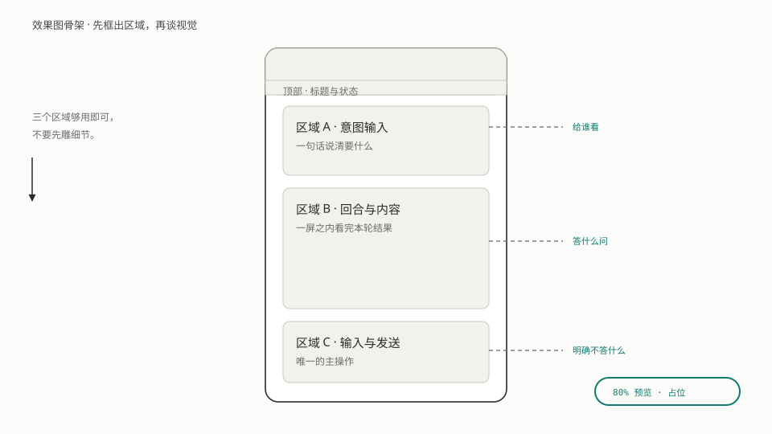
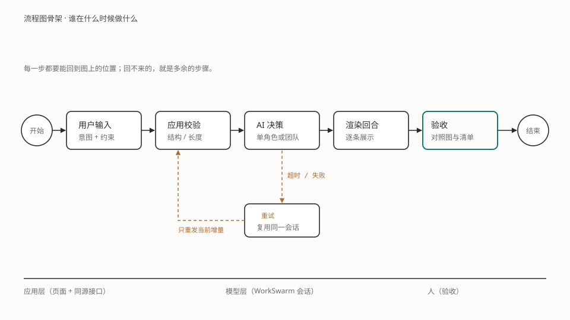
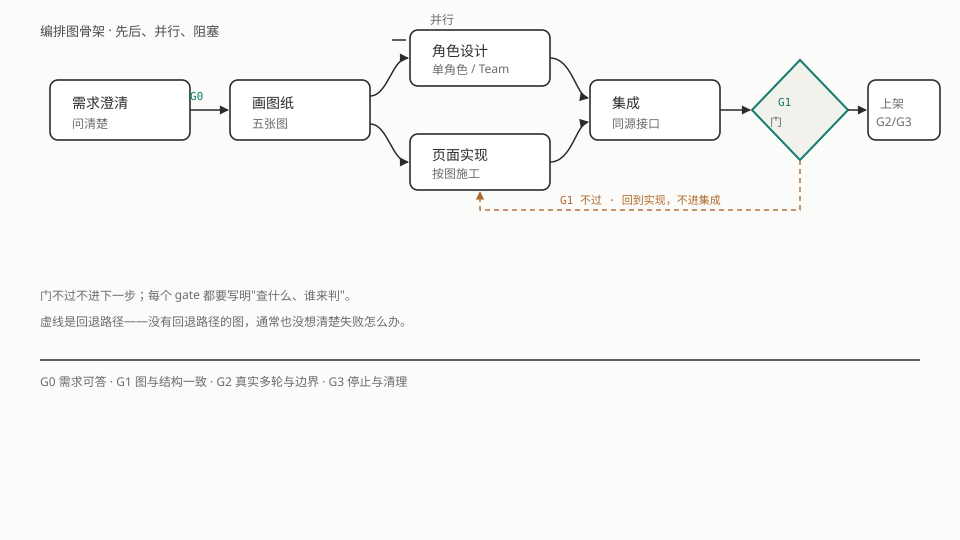
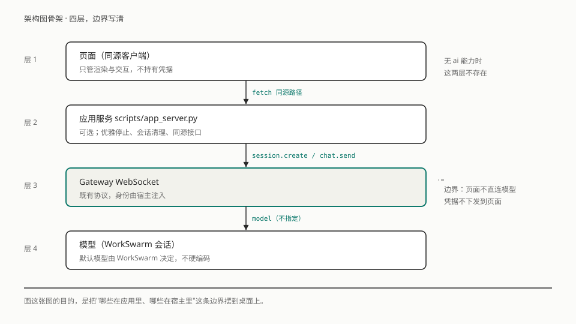
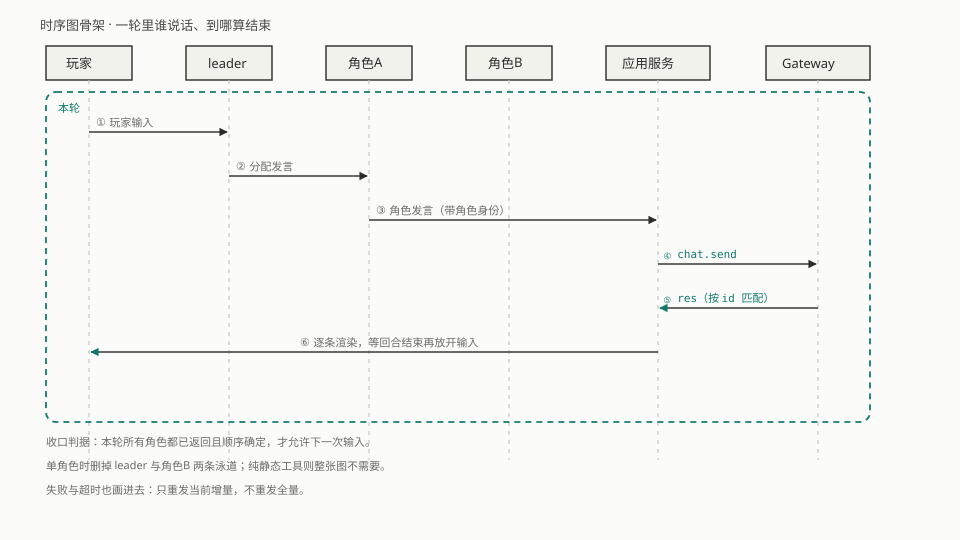

先看见，再动手
这是给智能体应用开发用的前置工作台。先过五张图，再把结论誊进字段；导出两份东西——
机器读的 diagram-first.json、人读的 app-spec.md。填完之前，后面每一段都是锁着的。
图是只读骨架，不是成品图。要改图里的字，编辑 figures/*.svg——它们是文本，能 diff、能评审、能替换。
阶段 0 · 定级
流程强度要匹配复杂度。Quick 只画两张图、只过一道门，别让小事被流程压死。
这次做多大
按级别决定画几张阶段 1 · 对标（BDMP）
效果图不凭空画。先找可借鉴的结构，再决定借什么——这是"生产前看到 80%"的来处。
先在阶段 0 选定级别。
从哪儿起手
参考清单
Quick 可留空六层拆解
每层写"能借鉴什么"可执行度与体量
阶段 2 · 画图
五张图各管一件事。每张先答"给谁看 / 答什么问 / 明确不答什么"，再勾"已确认"。
先完成阶段 1（Light 及以上需要至少一条参考）。
效果图 · 长什么样

流程图 · 谁在什么时候做什么

编排图 · 先后、并行、阻塞

架构图 · 系统怎么搭

时序图 · 一轮谁说话、到哪算结束

阶段 3 · 誊字段
把图上的结论誊成结构化字段。每个字段都标了它来自哪张图——对不上就说明图没画清。
先把这个级别要求的图全部确认。
项目卡
来自效果图角色与回合
来自时序图需要服务端（app_server.py）*
需要 ai 能力*
五段与质量门
来自编排图G0
问清楚
目标、边界、验收标准、不做什么。
G1
画图纸
五张图 + 字段，看的是同一张图。
G2
动手做
按图施工，小步提交，每步能回到图上位置。
G3
分步验
每段有 gate，不过不进下一步。
—
收尾记档
复盘、归档、更新图与知识。
验收 8 问 + 三条硬指标
来自全部图Q1给谁看？读者是谁，决策者是谁，执行者是谁？
Q2回答什么问题？这张图要消除哪个歧义？
Q3边界在哪？哪些在范围内，哪些明确不做？
Q4验收是什么？什么算完成，谁签字，怎么回滚？
Q5证据在哪？关键假设、数据、参考来源是否可追溯？
Q6失败会怎样？最坏情况、爆炸半径、停止条件是什么？
Q7谁维护？图源在哪，多久更新，过期怎么办？
Q8能不能打印？离线、黑白、A4 是否还能读？
H1同角色连续新局 5 次，会话数是否稳定？
H2刷新 3 次，会话是否不增长？
H3停止应用后，会话是否已删除或有待清理记录？
阶段 4 · 导出
JSON 给机器读（可被 app-builder 直接消费），Markdown 给人读（可直接贴进对话）。
点「还差什么」看看当前缺哪些必答项。